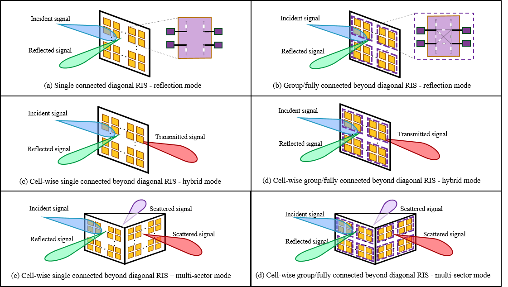

Future Intelligent Network and Communications (FineCom) Laboratory
|
|
About us
Our research lab, named Future Intelligent Network and Communications (FineCom) Laboratory, is established by Dr. Yijie (Lina) Mao in September, 2021. We mainly focus on the research field of wireless communication networks with emphasis on the potential key technologies for beyond 5G. Our research interests include (but not limited to):
MIMO communication systems
Transceiver design, multi-user interference management, resource allocation.
Rate-splitting multiple access (RSMA)
The theory, architectures, and applications of RSMA.
Artificial Intelligence-empowered wireless communication networks (AI + 6G)
The use of machine learning and deep learning to design efficient algorithms for resource allocation in wireless networks.
The use of wireless strategies for distributed learning and federated learning.
Reconfigurable Intelligent Surface (RIS)
Phase-shift design, beamforming design, and channel estimation for RIS-aided wireless networks.
The interplay of RIS with emerging 6G strategies.
Integrated Sensing and Communications (ISAC)
Spectrum sharing and management, joint system design, applications.
Space-Air-Ground Integrated Network (SAGIN)
Interference management, user scheduling, and cooperative transmission design.
Research Focus
- AI for 6G & 6G for AI
AI for 6G：Our primary focus is on leveraging machine learning (ML) and deep learning (DL) techniques to optimize network performance, resource allocation, and communication efficiency in next-generation wireless systems. We have contributed to various areas, including DL-based beamforming [Paper1][Paper2][Paper3][[Paper4]] and DL-based channel estimation[Paper5].
6G for AI：Our focus is on utilizing advanced wireless technologies to enhance distributed and federated learning (FL) frameworks for AI applications. We have made contributions to cloud radio access network (Cloud-RAN)-based FL [Paper6], [Paper7], and RIS-assisted FL [Paper8].

|
- Multiple Access for 6G
We focus on a novel multiple access technique known as rate-splitting multiple access (RSMA), which has emerged as a powerful strategy for multiple access, interference management, and multi-user communication in 6G and beyond. We have provided comprehensive tutorials and surveys on RSMA [Tutorial1][Tutorial2][Tutorial3][Paper1]. Our contributions include the design of RSMA, its integration with reconfigurable intelligent surfaces (RIS) [Paper2], integrated sensing and communication [Paper3], and visible light communications [Paper4], etc. Additionally, we have investigated the optimal beamforming structure for RSMA [Paper5].
- Reconfigurable Intelligent Surface (RIS)-empowered wireless networks
Our research focuses on advanced reconfigurable intelligent surfaces (RIS) architecture design and leveraging RIS to enhance signal quality, improve coverage, and optimize resource management in next-generation wireless networks. We have introduced a novel RIS architecture called Q-stem connected RIS, which integrates features from existing single-connected, tree-connected, and fully connected beyond-diagonal RIS (BD-RIS) [Paper1]. Additionally, we have explored advanced resource allocation algorithms for BD-RIS and investigated its diverse applications in 6G networks [Paper2][Paper3][Paper4][Paper5][Paper6][Paper7].
|  |
- Integrated Sensing and Communication (ISAC)
Our research focuses on developing joint frameworks for seamless integration of sensing and communication (ISAC) tasks, interference management, resource allocation, signal processing techniques, and leveraging AI/ML for real-time ISAC adaptation in 6G networks. We have contributed to multiple access design for ISAC [Paper1][Paper2][Paper3], RIS-assisted ISAC [Paper4], etc.
- Space-Air-Ground-Underground Integrated Network
Our research aims to develop unified frameworks that integrate satellite, aerial, terrestrial, and underground communication systems, enabling seamless and ubiquitous connectivity. We focus on optimizing resource management, mitigating interference, and leveraging emerging technologies like 6G and AI to enhance overall performance and reliability. Our contributions span several key areas, including interference management [Paper1], distributed learning [Paper2], and mobile edge computing within space-air-ground integrated networks (SAGIN) [Paper3]. Additionally, we have designed a novel RIS-assisted transmission framework for the Internet of Underground Things [Paper4].
- Optimization Theory
Our research spans a variety of directions, including convex and non-convex optimization, optimization in machine learning, stochastic and robust optimization, distributed optimization, multi-objective optimization, etc. We have developed a bi-level globalization strategy to ensure global convergence in non-convex consensus optimization [Paper1], optimal beamforming structures for generalized multi-group multicast [Paper2] and rate-splitting [Paper3], [Paper4], efficient optimization framework for BD-RIS-assisted multi-user multi-antenna networks [Paper5], [Paper6].

|
Members

|

|

|

|

|
||||
|
Yijie (Lina) Mao
Assistant Professor |
Xiaohua Zhou
PhD Student
|
Kangchun Zhao
PhD Student
|
Kexin Chen
Master Student
|
Zhengqing Qiu
Master Student
|
Chenyu Xu
Master Student
|
Xiaoxuan Jiang
Master Student
|
Yuchen Zhu
Master Student
|
Haobo Huang
Master Student
|
Alumni
Facheng Luo (Master Student, 2022-2025), is now working in Wind Information Co., Ltd.
Yiwen Wang (Master Student, 2022-2025), is now working in State Grid Corporation of China.
Jiawei Yao (Research Assistant, 2024-2025), is now pursuing his Ph.D. degree at the University of Miami, US
Kaiqiang Lin (Research Assistant, 2024-2025), is now working as a Postdoc at King Abdullah University of Science and Technology (KAUST), Saudi Arabia.
Chengzhong Tian (Master Student, 2021-2024), is now working in Beijing Aokang Yinhua Technology Co., Ltd.
Tianyu Fang (Master Student, 2020-2023, co-supervised with Prof. Zhengcai Zhu), is now pursuing his Ph.D. degree at the University of Oulu, Finland.
Yunpu Zhang (Research Assistant, 2023), is now pursuing his Ph.D. degree at the City University of Hong Kong, China.
Group Photos

|

|

|

|
|
Sep. 23, 2022 |
Oct. 30, 2022 |
May 12, 2023 |
May 14, 2023 |
Join us
-
Postgraduate (Master & PhD) Students
We are seeking highly motivated postgraduate students (master and PhD) who are interested in wireless communications. Students with strong backgrounds in wireless communications, mathematical optimization, signal processing, and machine learning are encouraged to apply.
- Post-doctoral Researchers
- Strong background in wireless communications (especially in the PHY layer)
- Strong background in mathematics and optimization theory
- Good English speaking and writing skills
- Sophisticated programming skills, e.g., MATLAB, Python
We are seeking highly motivated postdocs who are interested in wireless communication and wish to pursue research on 6G wireless communication system design. Ideal candidates are expected to meet the following requirements:
- Research Assistants
- A master degree in Communication Engineering related areas
- Sound organizational and interpersonal skills
- Proficient in programming languages such as MATLAB, Python
We are seeking a research assistant to work closely with the principal investigator, postdoc, and students in our lab. Ideal candidates are expected to meet the following requirements:
- Visiting Students
Visiting postgraduate students are warmly welcome. Feel free to drop us an email (maoyj@shanghaitech.edu.cn) if you are interested to come and visit ShanghaiTech for a few months and work with us.
- Inquiry
- A full up-to-date CV
- One copy of your undergraduate/postgraduate transcripts
- One copy of your representative research publication (if possible)
If you want to apply for one of the above positions, please email us (maoyj@shanghaitech.edu.cn) with the following documents attached: